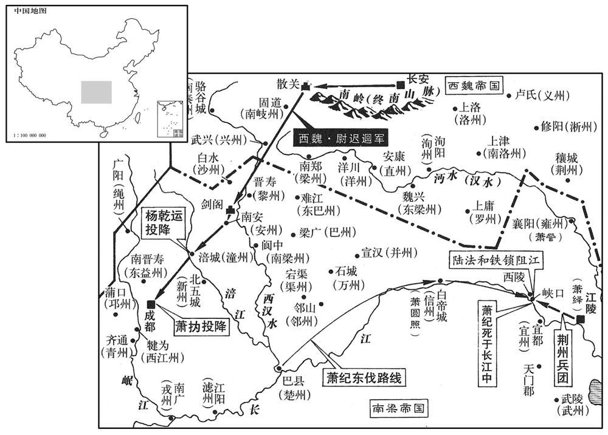
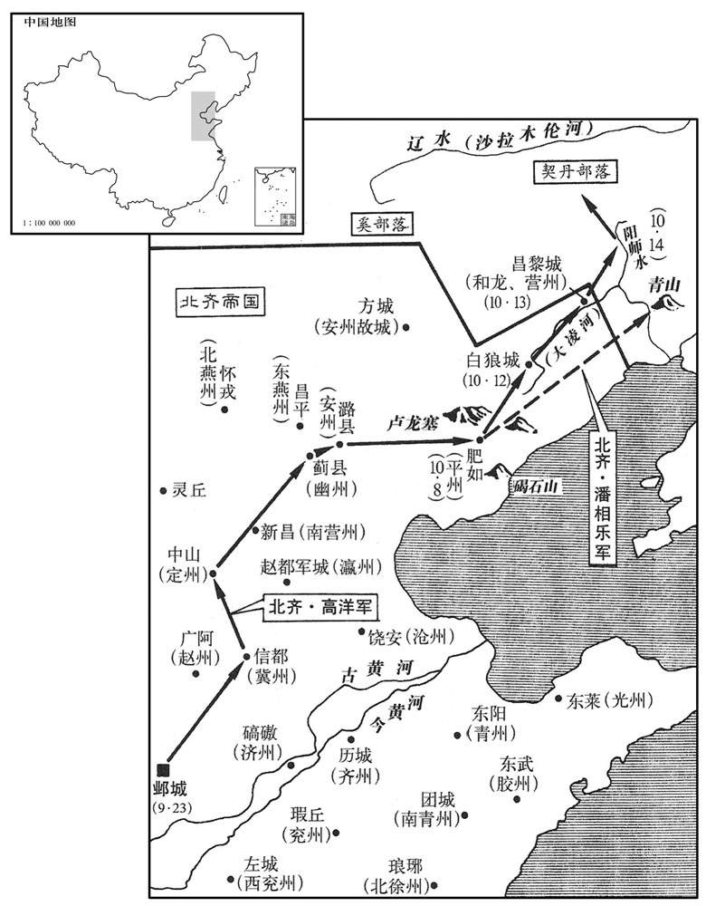
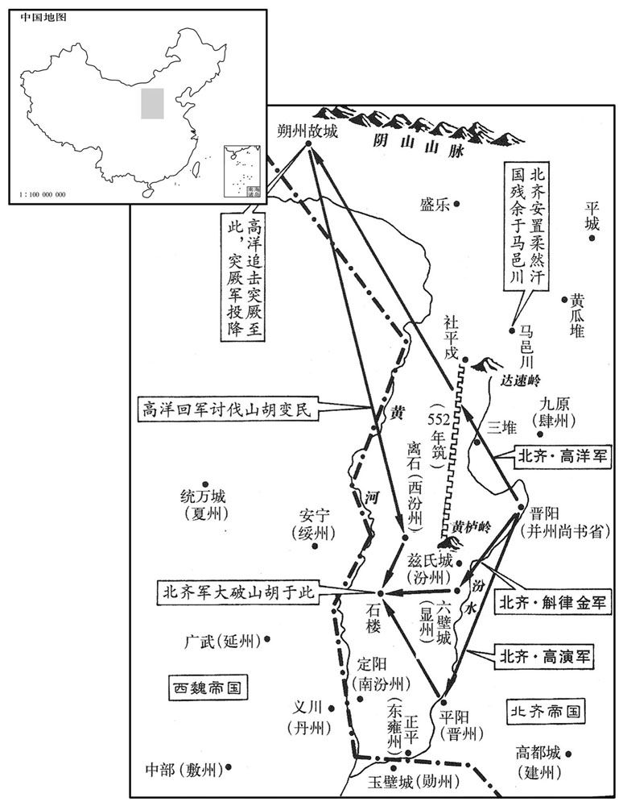

公元553年资治通鉴：本年记事、原文与白话对照
按原书编年位置阅读；追叙和史论不等于本年发生的事件。白话采用所据译本，缺译不以生成译文补齐。
卷165 · 本年记事
公元553年 · 梁世祖孝元皇帝承圣二年
承圣二年〔（癸酉、五五三）〕
上传原文的注释括号有异常，字符原样保留；无法可靠划分的段落默认全文显示。
本年事件索引（现代整理）
- 王僧辩从建康出发，命陈霸先代镇扬州
- 高洋出兵驱逐围困离石的山胡
- 梁元帝任王褒为左仆射
- 北齐改铸常平五铢钱
- 李洪雅献空云城投降陆纳，随后被推为大将军
- 宇文泰辞去丞相、大行台之职
- 王雄抵达东梁州，黄众宝率众向西魏投降
- 高洋送登注和库提返回柔然，二人先后继任可汗
- 突厥伊利可汗去世，其弟俟斤继位为木杆可汗
- 梁元帝听说武陵王萧纪率军东下，试图以术法诅咒萧纪
- 宇文泰派尉迟迥率军进攻蜀地
- 陆纳派吴藏等占据车轮，王僧辩与萧循率军抵达巴陵
- 宇文泰率军讨伐吐谷浑，凉州史宁袭击其返军
- 王僧辩水陆并进击败陆纳，进围长沙
- 萧纪得知西魏来攻，派谯淹回援蜀地
- 萧纪得知侯景之乱已平，仍决定继续东进
- 萧绎释放任约，命他协助陆法和抵御萧纪
- 余孝顷率一万兵马赴长沙会合王僧辩
- 豫章太守萧永部将杀武蛮奴，萧永军溃逃往江陵
- 王琳入城劝降陆纳，湘州平定后奉命西援峡口
- 北齐章武景王库狄干去世
- 萧纪拒绝萧绎许其还蜀的条件，随后又请求议和
- 萧纪拒绝赏赐黄金招募勇士，部众士气瓦解
- 王琳击败侯叡，萧纪兵败被樊猛擒杀
- 王僧辩返回江陵，朝廷命各路军队各回驻地
- 尉迟迥围成都五十日后接受萧撝投降
- 梁元帝与群臣商议返回建康，最终决定留在江陵
- 梁元帝任王琳为衡州刺史
- 王僧辩奉命返回建康镇守，陈霸先回京口
- 契丹侵犯北齐边境，高洋出兵北征
- 高洋在合肥训练水军准备袭击建康，王僧辩转镇姑孰
- 高洋长途奔袭，大破契丹并俘获人口牲畜
- 王僧辩抵达姑孰，派侯瑱等在东关筑垒待齐军
- 高洋登碣石山眺望沧海，任斛律金为太师
- 侯瑱在东关击败郭元建，北齐军大败
- 侯瑱杀死专权的徐佛受，王质接管吴州
- 梁元帝任王褒为左仆射、张绾为右仆射
- 突厥再次进攻柔然，柔然全境逃奔北齐
- 高洋迎接柔然降众并击退突厥
- 宇文泰杀死谋划刺杀他的西魏尚书元烈
- 梁元帝派王琛出使西魏
- 东方白额献宿预城投降梁朝，江西州郡起兵响应

本年形势与背景参考图

本年形势与背景参考图

本年形势与背景参考图
春，正月，王僧辩发建康，承制，使陈霸先代镇扬州。〔使陈霸先自京口代镇扬州。〕
春季，正月，王僧辩从建康出发，按照诏旨让陈霸先从京口回来替代他镇守扬州。
丙子，山胡围齐离石。戊寅，齐主讨之，未至，胡已走，因巡三堆，〔魏收地形志：郡平寇县，魏真君七年并三堆属焉。隋鴈门郡崞县有平寇县。〕大猎而归。
丙子（十三日），山胡包围了北齐的离石城。戊寅（十五日），北齐国主高洋出兵讨伐，还没到离石，山胡已经跑了，于是乘便巡视了三堆一带，痛快地打了一场猎后回来。
以吏部尚书王褒为左仆射。
梁元帝任命吏部尚书王褒为左仆射。
己丑，齐改铸钱，文曰「常平五铢」。〔五代志：齐文宣除魏永安五铢，改铸常平五铢，重如其文，其钱甚贵，且制造甚精。〕
己丑（二十六日），北齐修改铸钱的图样，上面铸的字为“常平五铢”。
二月，庚子，李洪雅力屈，以空云城降陆纳。〔去年吴藏攻李洪雅。降，户江翻；下同。〕纳囚洪雅，杀丁道贵。纳以沙门宝志诗谶有「十八子」，以为李氏当王，〔天监中，宝志为谶云：「太岁龙，将无理。萧经霜，草应死。余人散，十八子。」时言萧氏当灭，李氏代兴。谶，楚赞翻。〕甲辰，推洪雅为主，号大将军，使乘平肩舆，列鼓吹，纳帅众数千，左右翼从。〔吹，尺瑞翻。帅，读曰率；下同。从，才用翻。〕
二月，庚子（初七），李洪雅兵力不济，献出空云城投降陆纳。陆纳把李洪雅关起来，杀了丁道贵。陆纳因为僧人宝志写的诗谶中有“十八子”字样，以为姓李的会当皇帝，便于甲辰（十一日），推举李洪雅为主子，封号为大将军，让他坐在平肩舆上，左右排列鼓吹乐队，自己则率领几千士兵在左右护卫。
魏太师泰去丞相、大行台，〔去，羌吕翻。〕为都督中外诸军事。
西魏太师宇文泰辞去丞相、大行台等职，出任都督中外诸军事。
王雄至东梁州，黄众宝帅众降。〔黄众宝反见上卷上年。〕太师泰赦之，迁其蒙帅于雍州。〔帅，所类翻。雍，于用翻。〕
王雄进军东梁州，黄众宝率众投降。太师宇文泰赦免了黄众宝，把他手下骁勇的将领迁到了雍州。
齐主送柔然可汗铁伐之登注及兄库提还其国。〔登注等奔齐见上卷上年。可，从刊入声。汗，音寒。〕铁伐寻为契丹所杀，〔契，欺讫翻，又音吃。〕国人立登注为可汗。登注复为其大人阿富提所杀，〔复，扶又翻。〕国人立库提。
北齐国主高洋送柔然可汗铁伐的父亲登注和哥哥库提回到了他们的国家。铁伐不久被契丹人杀害，其国人又立登注为可汗，登注又被头人阿富提杀死，国人又立库提为可汗。
突厥伊利可汗卒，子科罗立，号乙息记可汗；〔厥，君勿翻。考异曰：颜师古隋书厥传云：「弟逸可汗立。」今从周书及北史。〕三月，遣使献马五万于魏。〔使，疏吏翻。〕柔然别部又立阿那緕叔父邓叔子为可汗；〔考异曰：魏书、北史蠕蠕传皆云「立铁伐为可汗」，突厥传皆云「立邓叔子为可汗」。盖诸部分散，各有所立也。〕乙息记击破邓叔子于沃野北木赖山。乙息记卒，舍其子摄图而立其弟俟斤，号木杆可汗。〔俟，渠之翻。杆，公旦翻。为后佗揼卒、摄图争国张本。考异曰：周书作「木汗」，隋书作「俟斗木杆」。今从北史。〕木杆状貌奇异，性刚勇，多智略，善用兵，邻国畏之。
突厥伊利可汗去世，其子科罗立为可汗，号为乙息记可汗。三月，科罗派使者献马匹五万给西魏。柔然另一个部落又立阿那的叔父邓叔子为可汗。乙息记可汗在沃野北边木赖山一带把邓叔子打得大败。乙息记去世，没有立他的儿子摄图而立他的弟弟俟斤为可汗，号为木杆可汗。木杆可汗相貌形状颇为奇特怪异，性格刚强勇猛，足智多谋，善于用兵打仗，邻国都怕他。
上闻武陵王纪东下，使方士画版为纪像，〔画，与画同。〕亲钉支体以厌之，〔钉．丁定翻。厌，于謟翻。〕又执侯景之俘以报纪。初，纪之举兵，皆太子圆照之谋也。圆照时镇巴东，〔巴东，信州。〕执留使者，启纪云：「侯景未平，宜急进讨；已闻荆镇为景所破。」纪信之，趣兵东下。〔使，疏吏翻。趣，读曰促。〕
元帝听到武陵王萧纪出兵东下的消息，就派会妖术的方士在木版上画上萧纪的图像，亲自往图像的躯体四肢上钉钉子，以为可以把他诅死。又把侯景的俘虏押送到萧纪那儿，告诉他侯景已平。当初，萧纪举兵东进，全是太子萧圆照的主意。萧圆照这时镇守巴东，截获了使者，派人报告萧纪说：“侯景还没平定，应该赶快进军声讨。我已听到荆州被侯景攻破的消息。”萧纪信以为真，就火速率兵东下。
上甚惧，与魏书曰：「『子纠，亲也，请君讨之。』」〔左传：齐无知弒其君，雍廪杀无知。公子小白自莒入于齐。鲁庄公伐齐，纳子纠，鲁师败绩。齐鲍叔帅师来言曰：「子纠，亲也，请君讨之。」乃杀子纠。〕太师泰曰：「取蜀制梁，在兹一举。」诸将咸难之。〔咸以为难也。〕大将军代人尉迟迥，泰之甥也，〔迥传：其先魏之别种，号尉迟部，因氏焉。尉，纡勿翻。〕独以为可克。泰问以方略，迥曰：「蜀与中国隔绝百有余年，恃其险，〔【章：十二行本「险」下有「远」字；乙十一行本同；孔本同；张校同。】〕不虞我至，若以铁骑兼行袭之，无不克矣。」〔骑，奇寄翻；下同。〕泰乃遣迥督开府仪同三司原珍等六军，甲士万二千，骑万匹，自散关伐蜀。〔考异曰：典略在正月戊辰。今从周纪。〕
元帝很害怕，就写信给西魏求援，信中引用了《左传》中鲍叔所说的“子纠，是我的亲族，请你不必顾虑，出兵讨伐他”，让宇文泰出兵打萧纪。太师宇文泰说：“夺取蜀地，制伏梁朝，就在这一次了。”但是，将领们都感到困难。大将军代京人尉迟迥是宇文泰的外甥，只有他以为能打下来。宇文泰问他有什么方法谋略，尉迟迥说：“蜀地和中原别的地区隔绝有一百多年了，仗恃其地险要，从来不曾担心我军会去攻打，如果我们用铁甲骑兵，昼夜兼行去偷袭，没有打不下来的。”宇文泰深以为然，就派尉迟迥率领开府仪同三司原珍等六支部队，甲士一万二千人，骑兵一万，从散关进发讨伐蜀地。
陆纳遣将吴藏、潘乌黑、李贤明等下据车轮。〔将，即亮翻；下同。按下文，陆纳夹岸为城。甲子，王僧辩攻拔之，乙丑，进围长沙。则车轮之地，盖据湘江之要，去长沙不远也。考异曰：梁纪云「二月丙子」。按长历，二月无丙子。梁纪误。〕王僧辩至巴陵，〔考异曰：典略云「三月辛酉」。按长历，是月癸亥朔，无辛酉。典略误。〕宜丰侯循让都督于僧辩，〔考异曰：僧辩传云「与陈霸先让都督」。今从典略。〕僧辩弗受。上乃以僧辩、循为东、西都督。夏，四月，丙申，僧辩军于车轮。〔考异曰：典略作「甲子」，非也。今从梁纪。〕
陆纳派他的部将关藏、潘乌黑、李贤明等人占据了车轮。王僧辩到了巴陵，宜丰侯萧循把都督让给王僧辩，王僧辩不接受。元帝就任命王僧辩、萧循为东西都督。夏季，四月，丙申（初四），王僧辩把军队驻扎在车轮。
吐谷浑可汗夸吕，虽通使于魏而寇抄不息，〔吐，从暾入声。谷，音浴。使，疏吏翻；下同。抄，楚交翻。〕宇文泰将骑三万踰陇，至姑臧，讨之。夸吕惧，请服；既而复通使于齐。凉州刺史史宁觇知其还，袭之于赤泉，〔唐志：凉州姑臧县有赤水军，本赤乌镇，有赤乌泉，因名，幅员五千一百八十里，军之最大者也。复，扶又翻。觇，丑盐翻，又丑艳翻。〕获其仆射乞伏触状。严：「状」改「拔」。】〕
吐谷浑可汗夸吕，虽然和西魏互派使者修好，但仍然在西魏边境抢劫进犯不止，宇文泰带骑兵三万人越过陇地，抵达姑臧去讨伐夸吕。夸吕害怕了，请求降服，但不久又派使者去联通北齐。凉州刺史史宁侦察到夸吕回来了，就在赤泉设伏兵袭击了他，抓获了他的仆射乞伏触壮。
陆纳夹岸为城，以拒王僧辩。纳士卒皆百战之余，僧辩惮之，不敢轻进，稍作连城以逼之。纳以僧辩为怯，不设备；五月，甲子，僧辩命诸军水陆齐进，急攻之，僧辩亲执旗鼓，宜丰侯循亲受矢石，拔其二城；纳众大败，步走，保长沙。乙丑，僧辩进围之。僧辩坐垄上视筑围垒，吴藏、李贤明帅锐卒千人开门突出，蒙楯直进，趋僧辩。〔帅，读曰率。楯，食尹翻。趋，七喻翻。〕时杜崱、杜龛并侍左右，甲士卫者止百余人，力战拒之。〔崱，士力翻。龛，苦含翻。〕僧辩据胡床不动，裴之横从旁击藏等，藏等败退，贤明死，〔李贤明，本侯景将也，景败，归王琳。〕藏脱走入城。
陆纳夹江岸修筑城垒，以抵抗王僧辩。陆纳的士兵都是身经百战的精锐，王僧辩有点害怕，因此不敢大意轻进，慢慢修筑相连的城垒来逼近陆纳的部队。陆纳以为王僧辩胆怯，所以一点也不防备。五月，甲子（初三），王僧辩命令水陆各路兵马齐头并进，猛烈发动进攻。王僧辩亲自举旗擂鼓，宜丰侯萧循亲自迎着飞箭乱石，从而攻下了陆纳的两座城垒。陆纳的队伍大败，步行逃跑退保长沙。乙丑（初四），王僧辩挥师进逼并把陆纳包围起来。王僧辩坐在土岸上督察兵士修筑围垒，吴藏、李贤明突然率领精锐将士一千人开门冲出来，拿着盾牌挥矛直进，朝王僧辩冲去。这时杜、杜龛两人都侍立在王僧辩身边，甲士、警卫人员只有一百多人，拼死抵抗。战斗异常激烈，但王僧辩坐在胡床上不动。裴之横从旁边率军袭击吴藏等人，吴藏才败退下去。李贤明战死，吴藏逃脱跑入城里。
武陵王纪至巴郡，闻有魏兵，遣前梁州刺史巴西谯淹还救蜀。初，杨干运求为梁州刺史，纪以为潼州刺史；〔【章：十二行本无「刺史」二字；乙十一行本同；张校同，云无注本亦无。】〕〔五代志：金山郡，西魏置潼州。盖梁已置此州也，治涪城。〕杨法琛求为黎州刺史，以为沙州：〔盖即以平兴为沙州也。潼，音同。琛，丑林翻。〕二人皆不悦。干运兄子略说干运曰：「今侯景初平，宜同心戮力，〔说，式芮翻。戮，音留，又音六，并力也。〕保国宁民，而兄弟寻戈，〔左传，子产曰：「昔高辛氏有二子，伯曰阏伯，季曰实沈，不相能也，日寻干戈，以相征讨。」〕此自亡之道也。夫木朽不雕，〔论语，孔本曰：「朽木不可雕也。」世衰难佐，不如送款关中，可以功名两全。」干运然之，令略将二千人镇剑阁，又遣其伲乐广镇安州，〔五代志：普安郡，梁置南安州，后改为安州。普安旧曰南安，西魏改普安。将，即亮翻。〕与法琛皆潜通于魏。魏太师泰密赐干运铁券，授骠骑大将军、开府仪同三司、梁州刺史。〔西魏之官，骠骑大将军、开府仪同三司，位次柱国大将军。骠，匹妙翻。〕尉迟迥以开府仪同三司侯吕陵始为前军，〔侯吕陵，虏三字姓。〕至剑阁，略退就乐广，翻城应始，始入据安州。甲戌，迥至涪水，〔涪水自龙州入潼州界。潼州治涪，其城西临涪水。涪，音浮。〕干运以州降。〔降，户江翻。〕泂分军守之，进袭成都。时成都见兵不满万人，〔见，贤遍翻。〕仓库空竭，永丰侯撝婴城自守，迥围之。谯淹遣江州刺史景欣、幽州刺史赵拔扈援成都，〔五代志：隆山郡隆山县，旧曰犍为县，置江州。迥使原珍等击走之。
两版字句有差异，建议核对原文。
武陵王萧纪的军队抵达巴郡，听说有西魏的士兵出现，就派前梁州刺史巴西人谯淹掉头回师救蜀。当初，杨乾运要求当梁州刺史，萧纪任命他为潼州刺史；杨法琛要求当黎州刺史，萧纪任命他为沙州刺史，两人都不高兴。杨崐乾运的侄子杨略向杨乾运进言说：“现在侯景之乱刚刚平定，应该同心协力，保卫国家，安抚黎民，而萧纪却起兵与萧绎争帝，兄弟打仗，争斗不已，这是自我灭亡的行为。人们说木头朽烂了就不能雕刻，世道衰颓了就难以扶救。我看不如和西魏联络一下，派人到关中去表示归附的心迹，这样可以功名两全。”杨乾运深以为然，命令杨略带兵二千去镇守剑阁，又派他女婿乐广去镇守安州，连同杨法琛一起，暗暗和西魏打通了关系。西魏太师宇文泰秘密地把铁券踢给杨乾运，并授予他骠骑大将军、开府仪同三司、梁州刺史的职位。西魏尉迟迥以开府仪同三司侯吕陵始为前军，抵达剑阁，杨略有意弃城退却，去投靠乐广，他从城墙翻出来接应侯吕陵始，这样， 侯吕陵始就轻而易举地占据了安州。甲戌（十三日），尉迟迥进军到涪水，杨乾运献出潼州投降。尉迟迥分出一部分军队守潼州，大军继续挺进，袭击成都。这时成都的守军剩下不满一万人，仓库空虚，粮草兵器都用完了，永丰侯萧环城防守，尉迟迥把成都包围起来。谯淹派江州刺史景欣、幽州刺史赵拔扈带兵去救援成都。尉迟迥派原珍等人击跑了他们。
武陵王纪至巴东，闻侯景已平，乃自悔，召太子圆照责之，对曰：「侯景虽平，江陵未服。」纪亦以既称尊号，〔纪称尊号，见上卷上年。〕不可复为人下，〔复，扶又翻；下上复、复送、乃复、无复同。〕欲遂东进。将卒日夜思归，其江州刺史王开业以为宜还救根本，更思后图；诸将皆以为然。〔将，即亮翻。〕圆照及刘孝胜固言不可，纪从之，宣言于众曰：「敢谏者死！」乙丑，纪至西陵，军势甚盛，舳舻翳川。〔舳，音逐。舻，音庐。翳，蔽也。〕护军陆法和筑二城于峡口两岸，运石填江，铁锁断之。〔断，音短。〕
武陵王萧纪进军到巴东时，才听说侯景之乱已经平定，于是感到后悔，就把太子萧元照找来，责备他。但萧元照回答说：“侯景之乱虽平，但江陵方面湘东王并没有臣服呀！”萧纪也认为自己既然已经称帝，就不能再臣服别人，于是就想继续东进。但是，他军中的将士们日夜思念故土，想回老家，他手 下的江州刺史王开业认为应该回去，救援成都，巩固根本，慢慢再考虑今后的发展。将领们也都觉得这 种想法是对的。只有萧元照和刘孝胜固执地说不行，必须继续东进。萧纪听从了这两人的意见，当众宣布说：“敢再多 说的就处死！”乙丑（疑误），萧纪的军队到达西陵，军势看起来很强盛，战船把江面都遮蔽了。江陵方面派护军陆法和在峡口修筑了两座城堡，运来很多大石头填江，同时拉上铁索把江面航道切断。
帝拔任约于狱，以为晋安王司马，〔帝封子方智为晋安王。任，音壬。〕使助法和拒纪，〔赤亭之战，法和活约，是有旧恩，故使助之。〕谓之曰：「汝罪不容诛，我不杀，本为今日！」因撤禁兵以配之，仍许妻以庐陵王续之女，使宣猛将军刘棻与之俱。〔为，于伪翻。妻，七细翻。棻，符分翻。〕
元帝把任约从监狱里放出来，任命地为晋安王司马，让他协助陆法和抵抗萧纪，并对他说：“你本来是该得死罪的，我不杀你，就是为了今天让你戴罪立功。”于是，把宫庭警卫部队也撤销了，把他们发配给任约指挥。元帝仍然答应任约把庐陵王萧续的女儿嫁给他，还派宣猛将军刘和他一块儿出发。
庚辰，巴州刺史余孝顷将兵万人会王僧辩于长沙。〔将，即亮翻；下同。〕
庚辰（十九日），巴州刺史余孝顷带兵一万去长沙和王僧辩会合。
豫章太守观宁侯永，昏而少断，〔少，诗沼翻。断，丁乱翻。〕左右武蛮奴用事，军主文重疾之。永将兵讨陆纳，至宫亭胡，重杀蛮奴，永军溃，奔江陵。重将其众奔开建侯蕃，蕃杀之而有其众。〔开建侯蕃时镇鄱阳。沈约曰：宋文帝分临贺郡之封阳县立开建县。〕
豫章太守观宁侯萧永，糊涂而缺少决断事情的魄力，把事情一概托给身边的亲信武蛮奴来掌管，军主文重对此很痛恨。萧永带兵去讨伐陆纳，抵达宫亭湖时，文重杀了武蛮奴，萧永的军队溃败下来，逃跑回江陵。文重带着他的部众投奔开建侯萧蕃，萧蕃杀了文重，而吞并了他的军队。
六月，壬辰，武陵王纪筑连城，攻绝铁锁，陆法和告急相继。上复拔谢答仁于狱，〔去年侯景败，得谢答仁，不杀而囚之。以为步兵校尉，梁东宫有步兵等三校尉。校，户教翻。〕配兵使助法和；又遣使送王琳，令说谕陆纳。〔使，疏吏翻。说，式芮翻。〕乙未，琳至长沙，僧辩使送示之，纳众悉拜且泣，使谓僧辩曰：「朝廷若赦王郎，乞听入城。」僧辩不许，复送江陵。陆法和求救不已，上欲召长沙兵，恐失陆纳，乃复遣琳许其入城。琳既入，纳遂降，湘州平。〔降，户江翻。考异曰：梁纪：「乙酉，湘州平。」按长历，是月无乙酉。梁纪误。〕上复琳官爵，使将兵西援峡口。〔将，即亮翻。〕
六月，壬辰（初一），武陵王萧纪修筑互相连接的城垒，攻断了拦江的铁锁，陆法和连连向江陵告急。元帝又把 谢答仁从监狱里放出来，任命他为步兵校尉，配以士兵，让他去协助陆法和。又派使者送王琳去陆纳那里，让他去劝说陆纳归顺。乙未（初四），王琳到了长沙，王僧辩派人送他去前线，崐把他指给陆纳看，陆纳等部众都拜倒在地哭泣 不止。陆纳派人对王僧辩说：“朝廷如果赦免了王琳，请你放他到城里来。”王僧辩不允许，又把王琳送回江陵。陆法和不断求救，元帝想把在长沙的王僧辩的军队调动来使用，又怕失去陆纳，于是又派王琳去，允许他到陆纳占据的城里去劝降。王琳进了城，陆纳就投降了，湘州从此被平定了。元帝恢复了王琳的官职爵位，让他带兵向西去支援峡口。
甲辰，齐章武景王库狄干卒。
甲辰（十三日），北齐章武景王库狄干去世。
武陵王纪遣将军侯叡将众七千筑垒与陆法和相拒。上遣使与纪书，许其还蜀，专制一方；纪不从，报书如家人礼。〔不肯定君臣之分而用兄弟之礼。使，疏吏翻；下同。〕陆纳既平，湘州诸军相继西上，〔上，时掌翻。〕上复与纪书曰：「吾年为一日之长，属有平乱之功，膺此乐推，事归当璧。〔长，陟丈翻。属，之欲翻。乐，音洛。左传：楚共王无耱适，有宠子五人，无适立焉。乃大有事于群望，而祈曰：「请神择于五人者，使主社稷。」乃徧以璧见于群望曰：「当璧而拜者，神所立也。」既乃密埋璧于大室之庭，使五人者齐而长入拜，康王跨之，灵王肘加焉，子千、子簒皆远之。平王弱，抱以入，再拜，皆厌纽。后平王卒有楚国。〕傥遣使乎，良所迟也。〔迟，直利翻，待也。〕如曰不然，于此投笔。友于兄弟，分形共气，兄肥弟瘦，无复相见之期，让枣推梨，永罢欢愉之日。〔汉孔融兄弟七人，融第六，四岁时，与诸兄共食梨枣，辄引小者。人问其故，答曰：「我小儿，法当取小者。」人皆异之。推，吐雷翻。〕心乎爱矣，书不尽言。」〔言兄弟之爱存之于心，非书翰之间所能尽言也。〕纪顿兵日久，频战不利，又闻魏寇深入成都，孤危忧懑，不知所为。〔懑，音闷，又音满。〕乃遣其度支尚书乐奉业诣江陵求和，请依前旨还蜀。〔度，徒洛翻。〕奉业知纪必败，启上曰：「蜀军乏粮，士卒多死，危亡可待。」上遂不许其和。〔史言上兄皆阻兵而安忍。〕
武陵王萧纪派将军侯睿带领七千人修筑城堡和陆法和对抗。元帝派使者送信给萧纪，准许他带头回蜀，可以专制一方。萧纪不听从，回信用兄弟之礼相称，不用君臣之礼。陆纳被平定后，湘州各路人马相继向西开来，元帝再次写信给萧纪，说：“我年纪比你大，又有平定侯景的功劳，荣幸被众人心悦诚服地推举，登基称帝的事实乃天意。倘若你这时看清形势，派使者来朝见称臣，这正是我等待的。如果不这样做，那么就此扔下笔动刀兵吧！兄弟之间，本该友好，因为大家形体虽分，血脉气质却是相通的。汉代赵孝自愿代替瘦弱的弟弟去死，情深谊厚，但我们之间却不再有相见的时候，孔融对兄长让枣推梨，欢乐愉悦，已经一去不返。兄弟之爱存于我心，文字是 不能完全表达的。”萧纪看到军队屯驻日久，频繁地打仗，都不顺利，又听说西魏的军队深入后方，成都处于孤立而危险的态势之中，于是忧愁愤懑，不知该怎么办好。于是，他派手下的度支尚书乐奉业去江陵向萧绎求和，请求按照以前萧绎信中说的回师蜀地。乐奉业看到萧纪必败无疑，就报告元帝说：“蜀军缺乏粮食，士兵死亡很多，全军灭亡，指日可待。”元帝听到这个情况，就不允许萧纪求和了。
纪以黄金一斤为饼，饼百为箧，至有百箧，银五倍于金，锦罽、缯彩称是，每战，悬示将士，不以为赏。〔罽，音计。缯，慈陵翻。称，尺证翻。将，即亮翻；下同。〕宁州刺史陈智祖请散之以募勇士，弗听，智祖哭而死。有请事者，纪称疾不见，由是将卒解体。
萧纪用一斤黄金做成一个饼，一百个黄金饼装为一箱，积下的黄金共有一百箱，银子五百箱，其他锦缎、缯一类的东西也很多。每次作战，他都把这些东西挂起来让将士们看，但不用它作奖赏之物。宁州刺史陈智祖要求把这些财物分发给军队，以招募勇士，但萧纪不听，陈智祖情知这样下去，必败无疑，终于痛哭而死。有事情要求见的，萧纪推说自己病了，不予接见，因此军队将士离心离德，逐渐解体。
秋，七月，辛未，巴东民苻升等斩峡口城主公孙晃，降于王琳。〔将，即亮翻。降，户江翻。考异曰：典略作「丙戌」。今从梁书。〕谢答仁、任约进攻侯叡，破之，拔其三垒。于是两岸十四城俱降。纪不获退，〔诸城已降，江陵兵断道，故不获退。〕顺流东下，游击将军〔【章：十二行本「军」下有「南阳」二字；乙十一行本同；孔本同；退斋校同。】〕樊猛追击之，纪众大溃，赴水死者八千余人，猛围而守之。上密敕孟曰：「生还，不成功也。」猛引兵至纪所，纪在舟中绕床而走，以金囊掷猛曰：「以此雇卿，送我一见七官。」猛曰：「天子何由可见！杀足下，金将安之！」〔之，往也。〕遂斩纪及其幼子圆满。陆法和收太子圆照兄弟三人送江陵。上纪纪属籍，赐姓饕餮氏。〔饕，他刀翻。餮，他结翻。贪财为饕，贪食为餮，以帝鸿氏不才子比纪也。〕下刘孝胜狱，已而释之。〔纪之称帝举兵，刘孝胜实鼓成之，此而不诛，亦失刑也。下，遐嫁翻。〕上使谓江安侯圆正曰：「西军已败，汝父不知存亡。」意欲使其自裁。〔圆正见囚，见上卷简文帝大宝二年。〕圆正闻之哭，称世子不绝声。〔咎圆照之误纪也。号，户刀翻。〕上频使觇之，知不能死，移送廷尉狱，见圆照，曰：「兄何乃乱人骨肉，使痛酷如此！」圆照唯云「计误」。上并命绝食于狱，至啮臂啖之，十三日而死，远近闻而悲之。〔觇，丑廉翻，又丑艳翻。啮，鱼结翻。啖，徒敢翻，又徒滥翻。〕
秋季，七月，辛未（十一日），巴东平民符升等人杀了峡口城守将公孙晃，投降了王琳。谢答仁、任约进攻侯睿，大获全胜，攻下了他的三座堡垒，于是长江两岸十四座城市全部投降了。萧纪后路被切断，没有退路了，只好顺流东下。游击将军南阳人樊猛派兵去追击，萧纪的部众分崩离析，四处溃逃，跳崐到水里淹死的有八千多人。樊猛把萧纪密密包围起来，严守着不让他逃脱。元帝秘密地派人送旨令给樊猛，说：“如果让萧纪生还，那就是不成功。”樊猛带兵到达了萧纪的住处，萧纪在船上绕床而跑，用装金子的口袋扔向樊猛，说：“我用这袋金子雇你，送我去和七官（萧绎）见一面。”樊猛拒绝说：“天子怎么能随便见面，杀了你，金子能跑到哪儿去呢？”于是就杀了萧纪和他的小儿子萧圆满。陆法和押送太子萧圆照兄弟三人去江陵。元帝取消了萧纪的族籍，另赐他姓饕餮氏。元帝把刘孝胜投入监狱，后来又释放了他。元帝派人对江安侯萧圆正说：“西边的军队已经失败，你父亲不知死活。”意思是想让他自杀。圆正听了后大声号哭，口里连连抱怨太子萧圆照，说他误了萧纪，替萧纪引错了路。元帝不断派人去观察他，知道他没有自杀的意思，就把他移送到廷尉管的大狱里。在监狱，萧圆正见了萧圆照，说：“哥哥何必鼓动父亲，使他们兄弟骨肉相残，弄出这样痛苦残酷的结局呢？”萧圆照只是说：“计策有误。”元帝断绝了他们在监狱里的食物，让他们饿得咬自己的臂膀，过了十三天终于死了。远近听到消息，都为他们感到悲伤。
乙未，王僧辩还江陵。诏诸军各还所镇。
乙未（疑误），王僧辩回到江陵。元帝下诏让各路兵马都回到各自的镇所去。
魏尉迟泂围成都五旬，永丰侯撝屡出战，皆败，乃请降。诸将欲不许，迥曰：「降之则将士全，远人悦；攻之则将士伤，远人惧。」遂受之。八月，戊戌，撝与宜都王圆肃帅文武诣军门降，〔撝，许韦翻。降，户江翻。将，即亮翻。帅，读曰率。〕迥以礼接之，与盟于益州城北。吏民皆复其业，唯收奴婢及储积以赏将士，军无私焉。〔史言尉迟迥能凝蜀人之心。〕魏以撝及圆肃并为开府仪同三司，以迥为大都督益‧潼等十二州诸军事、益州刺史。
西魏尉迟迥把成都包围了五十天，永丰侯萧多次出城迎战，都失败了，于是请求投降。但是尉迟迥手下的将领们不允许，尉迟迥说：“接受他投降，则我军将士完好无死伤，远方百姓也高兴。继续进攻则将士必有伤亡，远方百姓会害怕。”于是就接受了萧的投降。八月，戊戌（初八），萧和宜都王萧圆肃带着文武官员到尉迟迥军营前投降，尉迟迥按礼仪迎接了他，和他在益州城北订立了受降盟约。凡官吏百姓都各安其业，只没收奴婢和仓库积粮赏赐给将士们，军队中没有人敢私下抢掠的。西魏任命萧和萧圆肃一并为开府仪同三司，任命尉迟迥为大都督益、潼等十二诸州军事，益州刺史。
庚子，下诏将还建康，领军将军胡僧佑、太府卿黄罗汉、吏部尚书宗懔、〔懔，力荏翻，又巨禁翻。〕御史中丞丷〔丷，讫岳翻。〕谏曰：「建业王气已尽，与虏正隔一江，若有不虞，悔无及也！〔建业与齐止隔一江，固也。独不思江陵介在江北，逼近襄阳，岳阳有复雠之志，宇文有启疆之思乎！〕且古老相承云：『荆州洲数满百，当出天子。』今枝江生洲，百数己满，〔盛弘之荆州记曰：自枝江县西至上明，东及江津，其中有九十九洲。楚谚云：洲不百，故不出王者。〕陛下龙飞，是其应也。」上令朝臣议之。〔朝，直遥翻。〕黄门侍郎周弘正、尚书右仆射王褒曰：「今百姓未见舆驾入建康，谓是列国诸王；愿陛下从四海之望。」时群臣多荆州人，皆曰：「弘正等东人也，〔周顗、王导自南渡以来世居建康，故谓为东人。〕志愿东下，恐非良计。」弘正折之曰：〔折，之舌翻。〕「东人劝东，谓非良计，西〔【章：十二行本「西」上有「君等」二字；乙十一行本同。】〕人欲西，岂成长策﹖」上笑。又议于后堂，会者五百人，上问之曰：「吾欲还建康，诸卿以为如何﹖」众莫敢先对。上曰：「劝吾去者左袒。」左袒者过半。武昌太守朱买臣言于上曰：「建康旧都，山陵所在；〔梁氏自简文以上葬建康，武帝以上葬晋陵。守，式又翻。〕荆镇边疆，非王者之宅。〔荆州被边，自晋以来为重镇。〕愿陛下勿疑，以致后悔。臣家在荆州，岂不愿陛下居此，但恐是臣富贵，非陛下富贵耳！」上使术士杜景豪卜之，不吉，对上曰：「未去。」退而言曰：「此兆为鬼贼所留也。」上以建康雕残，江陵全盛，意亦安之，卒从僧佑等议。〔史言上怀居违卜，以成亡国之祸。卒，子恤翻。〕
庚子（初十），元帝下诏令，准备回建康。领军将军胡僧、太府卿黄罗汉、吏部尚书宗懔、御史中丞刘等人进谏劝止，说：“建康那地方王气已尽，而且和敌虏只隔一条长江，如果有什么不测之灾，后悔就来不及了！况且从古至今，就相传说：‘荆州的沙洲满一百时，定会出天子’。现在枝江生出了一个新的沙洲，荆洲的沙洲已经满一百了，所以陛下云腾龙飞，乘势而起，正是其应验呀。”元帝让朝廷大臣讨论这件事。黄门侍郎周弘正、尚书右仆射王褒说：“现在老百姓还没看见皇上车辆仪仗进入建康，因此以为皇上还是列国诸王之一。希望陛下依从四海黎民的瞩望，回建康定都。”当时群臣大多是荆州人，都说：“周弘正等是东边的人，当然一心要回东边去，他们的主张恐怕不是什么好主意。”周弘正当面争辩说：“东边的人劝皇上去东边，就说不是好主意；西边的人想去西边，难道倒成了妙策？”元帝听着他们争论，不禁笑了。定都建康的问题又在后堂进行讨论，与会者共五百人。元帝问大家：崐“我想回建康定都，各位大臣，你们对这件事有什么看法？”众人谁也不敢先回答。元帝看大家都不吱声，就说：“劝我去建康的把左肩膀袒露出来。”结果袒露左肩的人过了一半。武昌太守朱买臣向元帝进言，说：“建康是我们梁朝的旧都，是帝室祖宗陵墓的所在地。而荆州是边疆军事重镇，不是帝王居住的地方。希望陛下下决心回建康，不要怀疑犹豫，以至将来后悔。我家就住在荆州，难道不愿陛下住在这儿？但这样做恐怕是臣下富贵之计，不是陛下 富贵之计了！”元帝又让术士杜景豪占卜吉凶，结果不吉利，因此杜景豪对元帝说：“别去建康。”退朝后他又说：“这个征兆是鬼贼所留下的。”元帝认为建康凋蔽残破，而江陵正处于全盛之时，心里的意思也是安于此地，于是听从了胡僧等人的意见，留在江陵。
以湘州刺史王琳为衡州刺史。
元帝任命湘州刺史王琳为衡州刺史。
九月，庚午，诏王僧辩还镇建康，陈霸先复还京口。〔复，扶又翻。〕丙子，以护军将军陆法和为郢州刺史。法和为政，不用刑狱，专以沙门法及西域幻术〔幻，胡辩翻。〕教化，部曲数千人，通谓之弟子。
九月，庚午（十一日），元帝下诏命令王僧辩回建康镇守，陈霸先再回京口。丙子（十七日）任命护军将军陆法和为郢州刺史。陆法和处理政事，不用刑法，不用断狱，专门用佛法和西域传来的幻术搞教化，他的部曲几千人，都称为弟子。
契丹寇齐边。〔契，欺讫翻。〕壬午，齐主北冀、定、幽、安，〔冀、定、幽、安，四州名。〕遂伐契丹。
契丹族在北齐边境虏掠。壬午（二十三日），北齐国主高洋到北方巡视冀州、定州、幽州、安州，于是决定讨伐契丹。
齐主使郭元建治水军二万余人于合肥，〔治，直之翻。〕将袭建康，纳湘潭侯退，〔退北奔见一百六十二卷武帝太清二年。〕又遣将军邢景远、步大汗萨帅众继之。〔步大汗，虏三字姓。汗，音寒。萨，桑葛翻。考异曰：梁书作「邢杲远，步六汗萨。」今从北齐书、北史。〕陈霸先在建康闻之，白上；上诏王僧辩镇姑孰以御之。
北齐国主派郭元建在合肥训练水军二万余人，准备袭击建康。北齐接受了湘潭侯萧退的投降，又派将军邢景远、步大汗萨率领部众跟进。陈霸先在建康听到消息，就向元帝报告。元帝下诏调王僧辩镇守姑孰进行抵抗。
冬，十月，丁酉，齐主至平州，从西道趣长堑，〔曹操征乌桓，出卢龙塞，堑山堙谷五百余里，后人因谓之长堑。趣，七喻翻。堑，七艳翻。〕使司徒潘相乐帅精骑五千自东道趣青山。辛丑，至白狼城；壬寅，至昌黎城，使安德王韩轨帅精骑四千东断契丹走路；〔魏收地形志：营州统内建德郡治白狼城。中兴初，分乐陵置安德郡，治般县。帅，读曰率。骑，奇寄翻。〕癸卯，至阳师水，〔唐志：贞观三年，以契丹、室韦部落置师州及阳师县于营州之废阳师镇，即此。〕倍道兼行，掩袭契丹。齐主露髻肉袒，昼夜不息，行千余里，踰越山岭，为士卒先，唯食肉饮水，壮气弥厉。甲辰，与契丹遇，奋击，大破之，虏获十余万口，杂畜数百万头。〔畜，许救翻。〕潘相乐又于青山破契丹别部。丁未，齐主还至营州。
冬季，十月，丁酉（初八），北齐国主高洋抵达平州，又从西边的道路去到长堑，派司徒潘相乐率领精锐骑兵五千人从东边的道路逼近青山。辛丑（十二日），北齐军队抵达白狼城；壬寅（十三日），抵达昌黎城，并派安德王韩轨率领精锐骑兵四千人切断了契丹东边的逃跑道路。癸卯（十四日），抵达阳师水，一路上以加倍的速度前进，昼夜兼行，奔袭契丹。北齐国主高洋露着发髻，光着膀子，昼夜不息，一气行军一千多里，爬山越岭，走在前面给士卒作榜样，一路上只是大块吃肉，痛饮泉水，因此军中杀敌定边的壮志越来越高昂。甲辰（十五日），北齐军队与契丹相遇，契丹人大败，俘虏十余万人，缴获各种牧畜几百万头。潘相乐又在青山打败另一支契丹军队。丁未（十八日），北齐国主高洋回到营州。
己酉，王僧辩至姑孰，遣婺州刺史侯瑱、〔东阳郡，梁置婺州。瑱，他甸翻，又音镇。〕吴郡太守张彪、吴兴太守裴之横筑垒东关，以待齐师。
己酉（二十日）王僧辩到姑孰，派遣婺州刺史侯、吴郡太守张彪、吴兴太守裴之横在东关筑营垒，以等待北齐的军队。
丁巳，齐主登碣石山，临沧海，遂如晋阳。以肆州刺史斛律金为太师，乃〔【章：十二行本「乃」作「召」；乙十一行本同；孔本同。】〕还晋阳，拜其子丰乐为武卫大将军，〔乐，音洛。命其孙武都尚义宁公主，宠待之厚，群臣莫及。〔金子羡，字丰乐。武都，光之子也。乐，音洛。〕
两版字句有差异，建议核对原文。
丁巳（二十八日），北齐国主高洋登上碣石山，东望沧海，然后就返回晋阳去。高洋任命肆州刺史斛律金为太师，回到晋阳后，又任命斛律金的儿子斛律丰乐为武卫大将军。他还让斛律金的孙子斛律武都娶了义宁公主，对他的宠爱优待之厚，其他群臣均无法相比。[29]闰月，丁丑，南豫州刺史侯与郭元建战于东关，齐师大败，溺死者万计。湘潭侯退复归于邺，王僧辩还建康。
闰月，丁丑，南豫州刺史侯瑱〔南豫州时治姑孰。瑱，他甸翻，又音镇。〕与郭元建战于东关，齐师大败，溺死者万计。〔溺，奴狄翻。〕湘潭侯退复归于邺，〔复，扶又翻。〕王僧辩还建康。
本段缺少可靠对应白话，原文完整保留；未使用生成译文。
吴州刺史开建侯蕃，恃其兵强，贡献不入，〔五代志：鄱阳郡，梁置吴州。〕上密令其将徐佛受图之。〔将，即亮翻。〕佛受使其徒诈为讼者，诣蕃，遂执之。上以佛受为建安太守，以侍中王质为吴州刺史。质至鄱阳，佛受置之金城，自据罗城，掌门管，〔左传：秦杞子曰：「郑人使我掌北门之管。」杜预注曰：管，钥也。〕缮治舟舰甲兵，〔治，直之翻。舰，户黯翻。〕质不敢与争。故开建侯部曲数千人攻佛受，佛受奔南豫州，侯瑱杀之，质始得行州事。
吴州刺史开建侯萧蕃，仗恃自己兵力强大，不向朝廷进贡。元帝秘密命令他的将领徐佛受算计他。徐佛受派他的党徒假装成打官司的人，去求见萧蕃，趁机把萧蕃抓起来。元帝任命徐佛受为建安太守，任命侍中王质为吴州刺史。王质到了鄱阳，徐佛受把他安置在金城，自己占据罗城，掌握城门钥匙，致力于修缮船只，训练士兵。王质不敢和他争权。原来属于开建侯萧蕃的部曲几千人哗变，进攻徐佛受，徐佛受逃往南豫州，侯把他杀了，这样，王质才开始得以行使州政大权。
十一月，戊戌，以尚书右仆射王褒为左仆射，湘东太守张绾为右仆射。
十一月，戊戌（疑误），元帝任命尚书右仆射王褒为左仆射，湘东太守张绾为右仆射。
己未，突厥复攻柔然，柔然举国奔齐。〔复，扶又翻。〕
己未（初一）突厥人又进攻柔然，柔然全国都投奔了北齐。
癸亥，齐主自晋阳北击突厥，迎纳柔然，废其可汗库提，立阿那緕子庵罗辰为可汗，置之马邑川，给其廪饩缯帛；〔饩，许气翻。缯，慈陵翻。〕亲追突厥于朔州，突厥请降，〔降，户江翻；下同。〕许之而还。〔还，从宣翻，又如字。〕自是贡献相继。
癸亥（初五），北齐国主高洋从晋阳向北进攻突厥人，迎接并接受柔然的投靠。他把柔然可汗库提废了，另立阿那的儿子庵罗辰为可汗，把他们安置在马邑川，供给他们俸禄、粮食、缯帛。北齐国主高洋亲自在朔州追击突厥人，突厥人请求投降，高洋答应了，于是回师。从此之后，突厥人就年年进贡了。
魏尚书元烈谋杀宇文泰，事泄，泰杀之。〔宇文泰于此独不书其官，因旧史成文也。〕
西魏尚书元烈阴谋杀害宇文泰，事情泄漏，宇文泰杀了他。
丙寅，上使侍中王琛使于魏。〔琛，丑林翻。使，疏吏翻。〕太师泰阴有图江陵之志，梁王詧闻之，益重其贡献。〔梁王詧吹倚魏以报河东王誉之雠。通鉴至此复书梁王詧。〕
丙寅（初八），元帝派侍中王琛出使西魏。太师宇文泰暗地里有夺取江陵的野心，梁王萧听到这消息，给西魏的贡品越发多了。
十二月，齐宿预民东方白额以城降，江西州郡皆起兵应之。〔江、淮之民苦于齐之虐政，欲相率而归江南。〕
十二月，北齐宿预的平民东方白额献出宿预城投降梁朝，江西各州郡都起兵响应东方白额。
译本所载内容待核对（不作白话）
[29]闰月，丁丑（疑误），南豫州刺史侯与郭元建交战于东关，北齐军队大败，淹死的士兵数以万计。湘潭侯萧退又退回到邺城，王僧辩回建康。